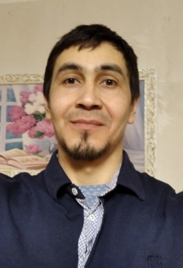

Junior frontend developer
Renat Gizatullin
Phone: +7 (937) 15 15 984
E-mail: giz-renat@yandex.ru
Skype: giz-renat_1
I dreamed of becoming an engineer-inventor as a child. I want to become a programmer and fulfill my childhood dream. I would like to work as a Frontend developer and improve into a good programmer. I want to work in a team of highly professional developers and create high-quality and get a job at EPAM Junior developer. To get the job of my dreams, I am ready to work hard and diligently.
Scills:
- HTML, CSS, Javascript, Git
- Pascal
Experience: I worked in a web Studio for about 1 year. Developed websites using HTML, CSS, and PHP technologies using MODx CMS.
Education:
- 2003 – 2007. Bashkir State University. Bachelor of mathematics.
- 2007 - 2009. Bashkir State University. Master of mathematics.
- 2009 - 2012. Bashkir State University, mathematical faculty. Postgraduate study.
English A2. I Studied English for more than 10 years (at school and University)